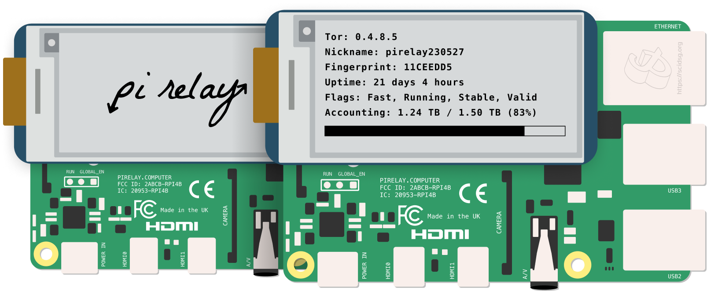

Transform a Raspberry Pi into a Tor relay.
To install, open the Terminal from a supported operating system and run:
curl -sSL https://install.pirelay.computer | bash
Made with ✊ by Science & Design
Pi Relay transforms your Raspberry Pi into a device that strengthens the Tor network, helping people around the world safely access the internet, right from your home, office, or university.
Features
Smart Defaults
Pi Relay comes configured for recommended operation.
Automatic Tor Updates
Never forget to update your relay again.
No Code Setup
A fully guided install with no manually editing files.
Run From Home
Pi Relay Home makes operating a relay safe from home.
E-Paper Enabled
Add an e-paper display to a Pi to see information about your relay.
Configurable Settings
You choose how much data to share and your bandwidth limits.
Sponsor a Relay
Want to help but don't want to operate a relay yourself? Sponsor a relay and we'll do it for you!
Sponsor a Relay